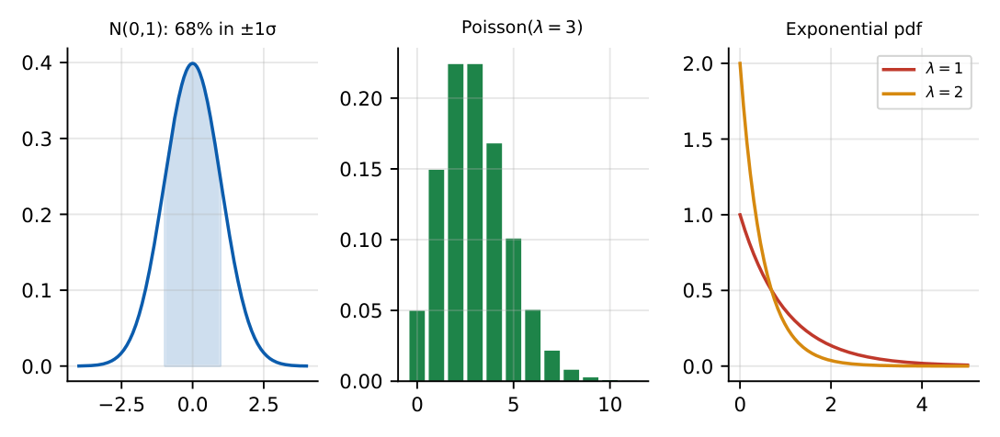

Probability and Statistics
In this chapter
Conditional probability and Bayes’ theorem, expectation and variance rules, the standard distributions (binomial, Poisson, uniform, exponential, normal), joint distributions, covariance and correlation, and linear regression. Many questions are two-line applications of a formula.
5.1 Probability axioms, combinatorial probability
\(0\le P(A)\le1\), \(P(S)=1\), \(P(A\cup B)=P(A)+P(B)-P(A\cap B)\), \(P(\overline A)=1-P(A)\).
Equally likely outcomes: \(P(A)=\frac{n(A)}{n(S)}\). \(\ {}^nP_r=\frac{n!}{(n-r)!}\), \(\ {}^nC_r=\frac{n!}{r!(n-r)!}\).
Independent events: \(P(A\cap B)=P(A)P(B)\). Mutually exclusive: \(P(A\cap B)=0\) (exclusive events with positive probabilities are not independent).
Two fair dice: \(P(\text{sum}=7)=6/36=1/6\). From 5 men and 4 women a committee of 3 is chosen; \(P(\text{exactly 2 women})=\frac{{}^4C_2\,{}^5C_1}{{}^9C_3}=\frac{30}{84}=\frac5{14}\).
5.2 Conditional probability and Bayes’ theorem
\(P(A|B)=\frac{P(A\cap B)}{P(B)}\). Total probability: \(P(B)=\sum_iP(B|A_i)P(A_i)\) for a partition \(\{A_i\}\).
Bayes: \(P(A_i|B)=\dfrac{P(B|A_i)P(A_i)}{\sum_jP(B|A_j)P(A_j)}\).
Prevalence \(1\%\), sensitivity \(90\%\), false-positive rate \(10\%\). \(P(\text{disease}|+)=\frac{0.9\times0.01}{0.9\times0.01+0.1\times0.99}=\frac{0.009}{0.108}\approx0.083\).
5.3 Random variables, expectation and variance
Discrete: pmf \(p(x)\) with \(\sum p=1\). Continuous: pdf \(f(x)\ge0\), \(\int f=1\), cdf \(F(x)=\int_{-\infty}^xf\).
\(\E[X]=\sum xp(x)=\int xf\,dx\), \(\ \E[g(X)]=\int g f\), \(\ \Var(X)=\E[X^2]-(\E X)^2\).
\(\E[aX+b]=a\E X+b\), \(\ \Var(aX+b)=a^2\Var X\). Always \(\E[X+Y]=\E X+\E Y\). For independent \(X,Y\): \(\E[XY]=\E X\E Y\) and \(\Var(X+Y)=\Var X+\Var Y\).
Mean, median (middle value) and mode (most frequent) of data; standard deviation \(\sigma=\sqrt{\Var}\). For \(\{2,3,3,4,8\}\): mean \(4\), median \(3\), mode \(3\), population variance \(\frac{4+1+1+0+16}5=4.4\).
5.4 Common discrete and continuous distributions
| Distribution | pmf / pdf | Mean | Variance |
|---|---|---|---|
| Bernoulli(\(p\)) | \(p^x(1-p)^{1-x}\) | \(p\) | \(p(1-p)\) |
| Binomial(\(n,p\)) | \({}^nC_xp^x(1-p)^{n-x}\) | \(np\) | \(np(1-p)\) |
| Poisson(\(\lambda\)) | \(e^{-\lambda}\lambda^x/x!\) | \(\lambda\) | \(\lambda\) |
| Geometric(\(p\)) | \((1-p)^{x-1}p\) | \(1/p\) | \((1-p)/p^2\) |
| Uniform(\(a,b\)) | \(\frac1{b-a}\) | \(\frac{a+b}2\) | \(\frac{(b-a)^2}{12}\) |
| Exponential(\(\lambda\)) | \(\lambda e^{-\lambda x}\) | \(1/\lambda\) | \(1/\lambda^2\) |
| Normal(\(\mu,\sigma^2\)) | \(\frac1{\sigma\sqrt{2\pi}}e^{-(x-\mu)^2/2\sigma^2}\) | \(\mu\) | \(\sigma^2\) |

Normal: \(Z=(X-\mu)/\sigma\); \(\Phi(1)=0.8413\), \(\Phi(2)=0.9772\); \(P(|Z|<1)=0.68\), \(P(|Z|<2)=0.95\), \(P(|Z|<3)=0.997\). Sum of independent normals is normal (means add, variances add).
Exponential is memoryless: \(P(X>s+t|X>s)=P(X>t)=e^{-\lambda t}\). Binomial \(\to\) Poisson (\(\lambda=np\)) when \(n\) large, \(p\) small; binomial \(\to\) normal when \(np(1-p)\) is large. Poisson with rate \(\lambda\) per unit time: inter-arrival times are exponential(\(\lambda\)).
5.5 Joint distributions, covariance, correlation
Joint pdf \(f(x,y)\): marginals \(f_X=\int f\,dy\); independent iff \(f=f_Xf_Y\). \(\Cov(X,Y)=\E[XY]-\E X\E Y\) and the correlation coefficient \(\rho=\frac{\Cov(X,Y)}{\sigma_X\sigma_Y}\in[-1,1]\). \(\Var(X\pm Y)=\Var X+\Var Y\pm2\Cov(X,Y)\). Independence \(\Rightarrow\rho=0\), but not conversely.
5.6 Correlation and regression
\(b=\frac{S_{xy}}{S_{xx}}=\frac{\sum(x-\bar x)(y-\bar y)}{\sum(x-\bar x)^2}=\rho\frac{\sigma_y}{\sigma_x}\), \(\ a=\bar y-b\bar x\). The line passes through \((\bar x,\bar y)\). The two regression lines intersect at the means and \(\rho^2=b_{yx}b_{xy}\).
(i) \(\Var(aX)=a^2\Var X\), not \(a\Var X\). (ii) \(\rho=0\) does not mean independence (except for jointly normal). (iii) Mutually exclusive \(\ne\) independent. (iv) Poisson mean equals variance; for the exponential the mean is \(1/\lambda\). (v) Bayes needs the total probability in the denominator.
Memorise the table of means and variances. For a normal probability standardise first, then use symmetry. For the sum of \(n\) independent identical variables mean and variance both scale by \(n\). Draw a tree for Bayes problems.
5.7 GATE problems
Q1. \(A,B\) independent with \(P(A)=0.3\), \(P(B)=0.4\). \(P(A\cup B)=\) (A) 0.12 (B) 0.58 (C) 0.7 (D) 0.82.
Q2. The expectation of one throw of a fair die is (A) 3 (B) 3.5 (C) 4 (D) 6.
Q3. The variance of a Poisson variable with mean 4 is (A) 2 (B) 4 (C) 8 (D) 16.
Q4. For a standard normal variable, \(P(-1<Z<1)\) is approximately (A) 0.34 (B) 0.50 (C) 0.68 (D) 0.95.
Answers: Q1 (B): \(0.3+0.4-0.12\). Q2 (B). Q3 (B). Q4 (C).
Q5. A disease has prevalence \(1\%\); a test has sensitivity \(90\%\) and false-positive rate \(10\%\). For a positive test \(P(\text{disease})\approx\) (A) 0.09 (B) 0.083 (C) 0.9 (D) 0.5.
Q6. A fair coin is tossed 5 times. \(P(\text{exactly 2 heads})=\) (A) \(5/16\) (B) \(3/8\) (C) \(1/32\) (D) \(1/2\).
Q7. The lifetime \(X\) is exponential with mean 2. \(P(X>3)=\) (A) \(e^{-1.5}\) (B) \(e^{-3}\) (C) \(1-e^{-1.5}\) (D) \(e^{-6}\).
Answers: Q5 (B). Q6 (A): \({}^5C_2/2^5=10/32=5/16\). Q7 (A): \(\lambda=1/2\), \(e^{-\lambda\cdot3}=e^{-1.5}=0.2231\).
Q8. \(X\sim U(0,6)\). \(\Var(X)=\) .
Q9. \(\E[XY]=10\), \(\E X=2\), \(\E Y=4\). \(\Cov(X,Y)=\) .
Q10. For \((x,y)=(1,3),(2,5),(3,7),(4,12)\) the least-squares slope of \(y\) on \(x\) is .
Answers: Q8: \(36/12=3\). Q9: \(10-8=2\). Q10: \(\bar x=2.5\), \(\bar y=6.75\), \(S_{xy}=14.5\), \(S_{xx}=5\), slope \(=2.9\).
Q11. For independent \(X,Y\): (A) \(\E[XY]=\E X\E Y\) (B) \(\Var(X+Y)=\Var X+\Var Y\) (C) \(\Cov(X,Y)=0\) (D) the converse of (C) is always true.
Answers: Q11: (A), (B), (C).
T1. Mean and variance of Binomial(10, 0.3)? T2. \(\Var(3X+2)\) if \(\Var X=4\)? T3. Probability that the sum of two dice is 7?
Answers: T1: \(3\) and \(2.1\). T2: \(36\). T3: \(1/6\).
- \(P(A\cup B)\), Bayes with total probability; independent \(\ne\) mutually exclusive.
- \(\Var X=\E X^2-(\E X)^2\), \(\Var(aX+b)=a^2\Var X\).
- Binomial \(np,\,npq\); Poisson \(\lambda,\lambda\); Uniform \(\frac{a+b}2,\frac{(b-a)^2}{12}\); Exponential \(\frac1\lambda,\frac1{\lambda^2}\).
- Normal 68–95–99.7; exponential memoryless.
- \(\Cov=\E XY-\E X\E Y\), \(\rho\in[-1,1]\); regression slope \(S_{xy}/S_{xx}\).